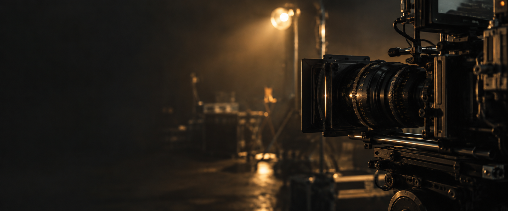

MR LIVE — VISUAL STORIESLIVE / FOTO / VÍDEO
CADA HISTÓRIA MERECE UM OLHAR.
O instante passa.
A imagem fica.
Ao vivo, num retrato ou em movimento.
Dou forma ao que merece ser lembrado.
PORTFÓLIO CRIATIVOIMAGEM EDITORIAL · IA
LIVE. FOTOGRAFIA. VÍDEO.CRIADO PARA SER SENTIDO. ↓
01 / O MEU OLHAR
Não é só o que se vê.
É o que se sente.
Sou o olhar por trás da MR Live. Trabalho com transmissões ao vivo, fotografia e vídeo — três formas de guardar a mesma coisa: a emoção de um momento.
Procuro a luz, o gesto e o detalhe. Aquilo que transforma uma imagem numa história que vale a pena contar.
MR Live↗02 / UNIVERSO VISUALTRÊS LINGUAGENS. UMA IDENTIDADE.
O meu trabalho,
em três dimensões.
3 áreas criativas
Conheça as minhas áreas de trabalho. A seleção de fotografias, filmes e lives será apresentada aqui.
A ASSINATURA MR LIVEDO OLHAR À EMOÇÃO
Viver. Captar.
Fazer sentir.
O seu momento merece
mais do que passar.Vamos contar essa história ↗
mais do que passar.Vamos contar essa história ↗
03 / A PRÓXIMA HISTÓRIA